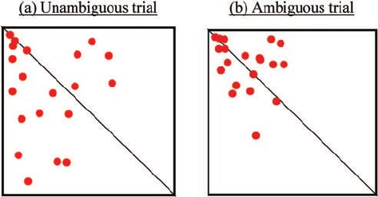
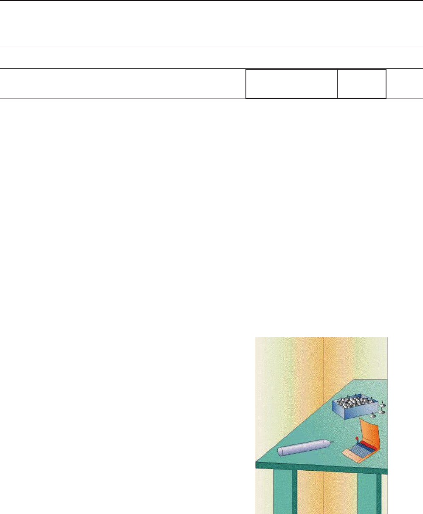
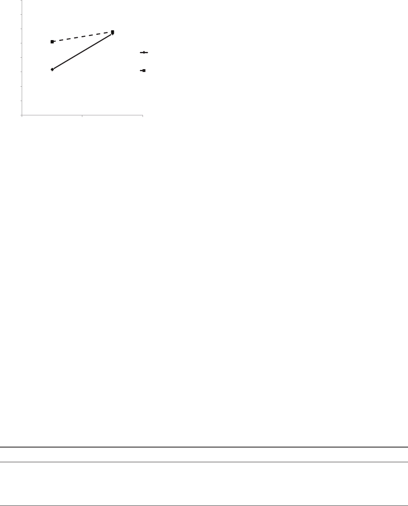
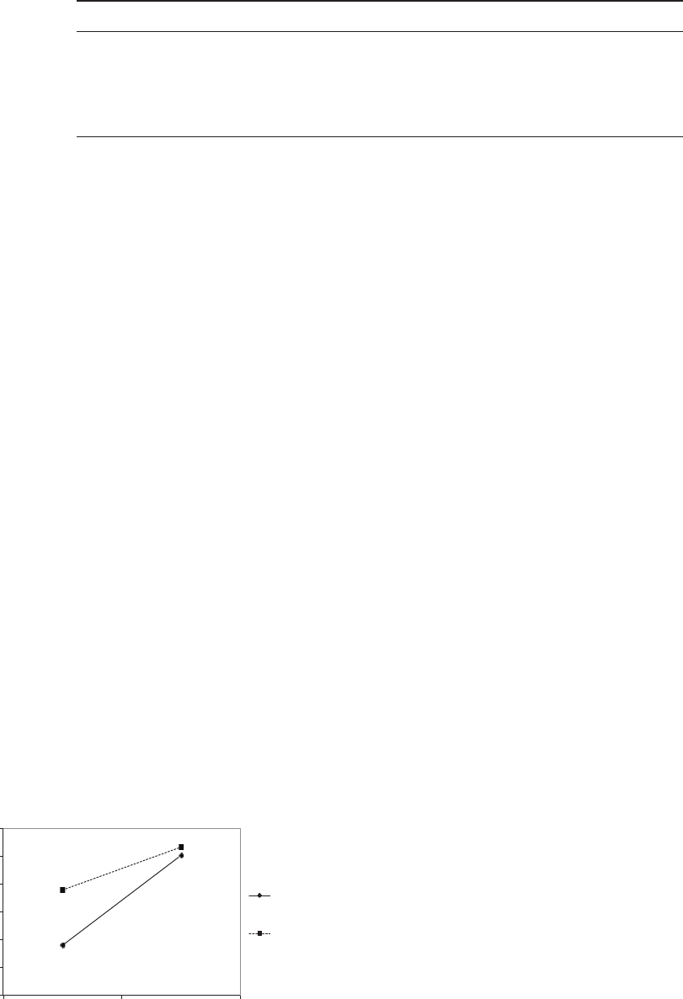
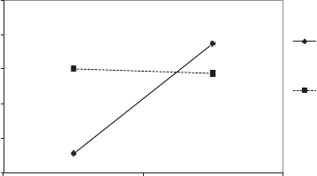

ATTITUDES AND SOCIAL COGNITION
The Dark Side of Creativity: Original Thinkers Can Be More Dishonest
Francesca Gino
Harvard University
Dan Ariely
Duke University
Creativity is a common aspiration for individuals, organizations, and societies. Here, however, we test
whether creativity increases dishonesty. We propose that a creative personality and a creative mindset
promote individuals’ ability to justify their behavior, which, in turn, leads to unethical behavior. In 5
studies, we show that participants with creative personalities tended to cheat more than less creative
individuals and that dispositional creativity is a better predictor of unethical behavior than intelligence
(Experiment 1). In addition, we find that participants who were primed to think creatively were more
likely to behave dishonestly than those in a control condition (Experiment 2) and that greater ability to
justify their dishonest behavior explained the link between creativity and increased dishonesty (Exper-
iments 3 and 4). Finally, we demonstrate that dispositional creativity moderates the influence of
temporarily priming creativity on dishonest behavior (Experiment 5). The results provide evidence for an
association between creativity and dishonesty, thus highlighting a dark side of creativity.
Keywords: creativity, ethics, morality, moral flexibility, unethical behavior
Evil always turns up in this world through some genius or other.
—Denis Diderot (1713–1784)
The ability to generate novel ideas and think creatively about
problems has long been considered an important skill for individuals
as well as for organizations and societies. Creative thinking allows
individuals to solve problems effectively (Mumford & Gustafson,
1988) and to remain flexible (Flach, 1990) so that they can cope with
the opportunities and changes in their day-to-day lives (Runco, 2004).
At a more macro level, societies use new inventions, original scien-
tific findings, and novel social programs to advance, and organiza-
tions need them to adapt to changing environments and to succeed in
the marketplace (Goldenberg & Mazursky, 2001; Goldenberg, Ma-
zursky, & Solomon, 1999; Oldham & Cummings, 1996). The impor-
tant role of creativity in human progress and adaptation is likely one
reason why scholars across disciplines long have been interested in
understanding how creative thinking occurs and how it can be fos-
tered (Simonton, 2003).
Creativity research in psychology has been conducted from
different perspectives. Some work has focused on evaluating the
creativity of products and individuals’ accomplishments (e.g.,
Amabile, 1983; Baer, Kaufman, & Gentile, 2004; Kaufman, Baer,
Cole, & Sexton, 2008; Plucker & Renzulli, 1999); other work has
explored the cognitive and motivational processes that lead to
creative ideas (e.g., Friedman & Förster, 2001; Hirt, McDonald, &
Melton, 1996; Smith, Ward, & Finke, 1995; Sternberg, 1999a) and
the contextual factors that influence creative problem solving (e.g.,
Amabile, 1979; Förster, Friedman, & Liberman, 2004; Galinsky &
Moskowitz, 2000; Maddux & Galinsky, 2009; Markman, Lind-
berg, Kray, & Galinsky, 2007); and still other research has exam-
ined the relationship between individuals’ personality and their
creativity (Kershner & Ledger, 1985; for reviews, see Feist, 1998,
1999; Simonton, 2000, 2003).
Despite their varying focus, these approaches share a basic prem-
ise: Because creativity improves problem solving and opens doors to
new solutions and opportunities, creativity should be stimulated. But
is creativity always beneficial? Although the positive aspects of cre-
ativity have been praised and tested empirically (Goldenberg & Ma-
zursky, 2001; Sternberg, 1999a, 1999b), it is possible that creative
thinking may also have a hidden cost in the form of increased
dishonesty when used to resolve ethical dilemmas.
In the current research, we test for this possibility and propose
that creativity has a dark side when applied to ethical behavior. We
conduct five studies to examine whether there is a positive and
reliable relationship between creativity and dishonesty, and to
investigate the psychological mechanisms explaining this link.
Creativity and Dishonest Behavior
Creativity is defined as the ability to produce ideas that are both
novel (i.e., original, unexpected) and appropriate (i.e., useful,
adaptive to task constraints; Amabile, 1983, 1988). Over the past
This article was published Online First November 28, 2011.
Francesca Gino, Harvard Business School, Harvard University; Dan
Ariely, Fuqua School of Business, Duke University.
We are grateful to Max Bazerman and Ting Zhang for their insightful
feedback on drafts of the article. We also greatly appreciate the support and
facilities of the Computer Lab for Experimental Research at the Harvard
Business School and the Center for Decision Research at the University of
North Carolina at Chapel Hill.
Correspondence concerning this article should be addressed to Francesca
Gino, Baker Library, 447, Soldiers Field Road, Harvard Business School,
Boston, MA 02163. E-mail: fgino@hbs.edu
Journal of Personality and Social Psychology, 2012, Vol. 102, No. 3, 445–459
© 2011 American Psychological Association 0022-3514/12/$12.00 DOI: 10.1037/a0026406
445

several decades, researchers have explored many of the psycho-
logical factors that are considered vital to the creative process and
have identified two main components underlying creative perfor-
mance: divergent thinking (Guilford, 1968, 1982) and cognitive
flexibility (Spiro & Jehng, 1990). Divergent thinking refers to the
ability of individuals to develop original ideas and to envision
multiple solutions to a given problem. It involves thinking “with-
out boundaries” or “outside the box” (Thompson, 2008, p. 226).
Cognitive flexibility, by contrast, describes the ability of individ-
uals to restructure knowledge in multiple different ways depending
on changing situational demands (i.e., the complexity of the situ-
ation).
Typically operating together, divergent thinking and cognitive
flexibility help people find creative solutions to difficult problems,
which may be interpreted from different points of view. One such
context is provided by ethical dilemmas. Ethical dilemmas often
require people to weigh two opposing forces: the desire to maxi-
mize self-interest and the desire to maintain a positive view of
oneself (Mead, Baumeister, Gino, Schweitzer, & Ariely, 2009).
Recent research has suggested that individuals tend to resolve this
tension through self-serving rationalizations: They behave dishon-
estly enough to profit from their unethical behavior but honestly
enough to maintain a positive self-concept as honest human beings
(Gino, Ayal, & Ariely, 2009; Mazar, Amir, & Ariely, 2008). When
facing the opportunity to behave dishonestly, in fact, most people
cheat, if only by a little bit, but not as much as they possibly could
(Ayal & Gino, 2011; Gino et al., 2009). This “minor” cheating can
be justified through various means. For instance, one might reason
that other people would cheat under the same circumstances or that
a little cheating will not hurt anyone.
Such self-serving justifications can help individuals convince
themselves that their behavior is in fact morally appropriate and, as
a result, that there is no need to negatively update their moral
self-image. As a result, any situation in which there is room to
justify potential dishonest or self-interested behavior is likely to
promote dishonesty (Schweitzer & Hsee, 2002; Shalvi, Dana,
Handgraaf, & De Dreu, 2011). This tendency to behave in a
self-interested manner when the behavior in question can be jus-
tified was demonstrated years ago in a compelling study by Sny-
der, Kleck, Strenta, and Mentzer (1979). In the study, participants
had to choose one of two rooms in which they would watch a
movie with another person and then answer a short survey. In one
room, the other person was physically handicapped; in the other
room, the person was not. When the movie shown was the same in
both rooms, participants were more likely to choose the room
where they would sit with the handicapped person rather than the
room where they would sit with the nonhandicapped partner.
However, when different movies were projected in the two rooms,
most people chose to avoid the stigmatized person because they
could easily justify their choices.
Similarly, Schweitzer and Hsee (2002) conducted a negotiation
study in which sellers of a car provided a buyer with a mileage
estimate from a range of possible values and could lie about the
estimate. The results indicated that sellers lied to a greater extent
when the provided range was wide rather than narrow; they could
justify the lie by using their increased uncertainty about the true
mileage. Sellers processed the information about the car’s mileage
in a self-serving manner, allowing them to gain financially.
Thus, when individuals can easily generate justifications to
reinterpret or rationalize unethical actions they are tempted to
engage in, they will be more likely to behave dishonestly for
monetary gains compared to situations in which justifying the
behavior is rather difficult. As noted by Kunda (1990), people
reach the conclusions they want to reach, “but their ability to do so
is constrained by their ability to construct seemingly reasonable
justifications for these conclusions” (p. 480). Greater creativity,
we suggest, facilitates this self-serving justification process. More
specifically, we propose that when people are motivated to behave
dishonestly so as to benefit financially in a given situation (or to
advance their self-interest in other forms), divergent thinking is
likely to help them develop original ways to bypass moral rules.
Similarly, cognitive flexibility is likely to help them reinterpret
available information regarding their own behavior in a self-
serving way. Indeed, as prior research has suggested, creative
people are able to perceive and describe what remains hidden from
the view of others (Carson, Peterson, & Higgins, 2003), and they
are also able to develop original ideas and to envision multiple
solutions to a given problem (Guilford, 1968, 1982).
As an example, consider a person’s process of figuring out
which tax deductions he or she is comfortable with and which lie
beyond his or her ethically acceptable boundaries. A person who is
highly creative or has been asked to think creativity about this task
may be more likely to identify original steps to follow and to
justify misreporting on taxes in novel ways. As this example
illustrates, greater creativity may promote dishonesty in two ways.
First, it can help individuals find creative loopholes to solve
difficult tasks they are facing, even if that entails crossing ethical
boundaries.
1
Second, creativity may help individuals generate var-
ious credible reasons to justify their own actions before engaging
in them—even when those actions are unethical. In this article, we
focus on this second direct consequence of creativity. In our
studies, we employ tasks in which participants have the opportu-
nity to behave dishonestly and are tempted to do so. We do not
study whether participants cheat in more or less creative ways
given a set of rules to complete the tasks. Rather, we focus on
whether creativity influences the way people who are tempted to
behave dishonestly justify their unethical actions.
In short, we expect creativity to be positively associated with
dishonest behavior when people face ethical dilemmas (Hypothesis
1). In addition, we expect this relationship to hold both in the case
of dispositional creativity and in the case of primes that temporar-
ily trigger a creative mindset (Hypothesis 2). Several studies have
demonstrated that simple primes can automatically activate certain
goals and mindsets (Chartrand & Bargh, 1996; Schaller, 2003),
which, in turn, influence perception and behavior without explicit
conscious awareness (Bargh, 1990; Bargh & Chartrand, 1999). For
instance, Fitzsimons, Chartrand, and Fitzsimons (2008) found that
participants primed with Apple logos (i.e., the logos of a company
commonly associated with creativity and innovation) behaved
1
For instance, in the field of professional legal services, lawyers who are
creative or who are paid to think creatively often end up exploiting the
loopholes and ambiguities of the law on behalf of clients, and their
“creative compliance” with regulatory requirements undermines the pur-
pose and effectiveness of existing regulations (McBarnet, 1988; McBarnet
& Whelan, 1991).
446
GINO AND ARIELY
more creatively on subsequent tasks compared to participants
primed with IBM logos and control participants. Finally, we sug-
gest that creativity promotes dishonesty by increasing people’s
ability to self-justify their bad deeds (Hypothesis 3). That is, we
propose that creativity increases moral flexibility, which we define
as individuals’ ability to justify their immoral actions by generat-
ing multiple and diverse reasons that these actions can be judged
as ethically appropriate.
Overview of the Present Research
We test our main hypotheses in a series of studies. First, as a
pilot study, we collect field data to examine whether people in jobs
that require high levels of creativity are more morally flexible than
others. Next, we conduct five laboratory studies in which partici-
pants have the opportunity to behave dishonestly by overstating
their performance and, as a result, earn more money. In Experi-
ment 1, we measure creativity as an individual difference and
examine whether this personality trait is associated with increased
dishonest behavior. In Experiment 2, we prime cognitions associ-
ated with creativity and examine whether they temporarily pro-
mote dishonesty. In Experiments 3 and 4, we explore the mecha-
nism explaining the link between creativity and dishonesty by
focusing on people’s ability to justify unethical behavior. Finally,
in Experiment 5, we examine whether individual differences in
creativity moderate the effect of priming a creative mindset on
dishonesty.
Across all our studies, we consistently find that greater creativ-
ity promotes dishonesty by increasing individuals’ ability to justify
their unethical actions, both when considering measures of creative
personality and when temporarily activating a creative mindset.
Pilot Study: Creativity and Dishonesty in the Field
We started our investigation of the relationship between creativ-
ity and dishonesty by collecting data from an advertising agency
located in the Southern United States. Ninety-nine employees (40
male; M
age
ϭ 33.48 years, SD ϭ 8.16) across 17 different depart-
ments within the same company responded to a short online
survey.
First, respondents indicated how likely they would be to engage
in each of eight ethically questionable behaviors (e.g., “Take home
office supplies from work,” “Inflate your business expense report”;
␣ϭ.78) on a 7-point scale (1 ϭ not likely,7ϭ very likely). Next,
they read two scenarios describing a person who has the opportu-
nity to behave dishonestly (from Gino, Norton, & Ariely, 2010; see
Appendix A) and then indicated how likely they would be to
behave unethically if they were in the actor’s shoes (using the
same 7-point scale). Finally, respondents identified their depart-
ment within the company and indicated how much creativity they
thought was required on their job (on a 7-point scale: 1 ϭ not at
all,7ϭ very much). Three managers in the executive office also
provided ratings for the level of creativity required in each depart-
ment (using a 10-point scale: 1 ϭ not at all,10ϭ very much).
We computed the z scores for all the measures included in the
study. As Table 1 shows, the creativity required on the job (as
judged by both employees and managers) was positively correlated
with employees’ self-reported dishonesty. These results provide
some preliminary evidence for the hypothesized association be-
tween creativity and dishonesty.
Experiment 1: Effects of a Creative Personality
Our first study tests the hypothesis that individuals who natu-
rally have a more creative personality are also more likely to
behave dishonestly. In addition, the study examines whether cre-
ativity as an individual difference is a better predictor of dishon-
esty than another dispositional factor often linked to creativity:
intelligence.
Whereas prior personality research has found a negative rela-
tionship between intelligence and academic cheating (Hethering-
ton & Feldman, 1964; Johnson & Gormly, 1971), Sternberg (2001)
proposed that there is a dialectical relationship between creativity
and intelligence. In his view, intelligence is a necessary condition
for creativity, which depends both on generation of novel ideas and
critical analysis of them. If Sternberg’s proposed positive relation-
ship between intelligence and creativity does in fact exist, one
might also wonder whether it is intelligence and not creativity that
leads to dishonesty. Experiment 1 jointly tested the links between
intelligence, creativity, and dishonest behavior.
Method
Participants. Ninety-seven students from local universities
in the Southeastern United States (45 male; M
age
ϭ 21 years, SD ϭ
3.59) enrolled in the study for payment. Participants were paid a $2
show-up fee and were paid $3 for completing the online portion of
the study; they then could earn an additional $20 based on the
choices they made throughout the study.
Procedure. A week before the laboratory portion of the
study, participants completed an online survey that included dis-
positional measures of both intelligence and creativity. On the day
they showed up at the laboratory, participants were told the study
included three different tasks testing their problem-solving abili-
ties, general knowledge, and perceptual skills, which had been
combined for convenience. The three tasks were a perceptual task,
Table 1
Descriptive Statistics (on Raw Measures) and Correlations (on z Scores of Each Measure), Pilot Study
Ratings type MSD1234
1. Ratings provided by managers for the level of creativity required in each department 7.10 1.94 .53
ءءء
.30
ءء
.46
ءءء
2. Ratings provided by employees for the level of creativity required in their job 4.84 1.55 .20
ء
.24
ء
3. Ratings provided by employees for their likelihood to behave dishonestly across the eight behaviors 2.58 1.05 .37
ءءء
4. Ratings provided by employees for their likelihood to behave dishonestly across the two dilemmas 3.69 1.52
ء
p Ͻ .05.
ءء
p Ͻ .01.
ءءء
p Ͻ .001.
447
CREATIVITY AND DISHONESTY

a problem-solving task, and a multiple-choice task. We random-
ized the order in which these tasks were presented to participants.
Each task provided participants with the opportunity to cheat.
We used multiple measures of creativity and intelligence as well
as various tasks to assess cheating to test the robustness of our
proposed relationship between creativity as an individual differ-
ence and dishonesty.
Dispositional measures.
Creativity. We used three measures to assess participants’
creativity, all of which have been shown to robustly predict cre-
ative performance (e.g., Barron & Harrington, 1981; Feist, 1999;
Gough, 1979; Tierney & Farmer, 2002; Zhou & Oldham, 2001).
The first measure was Gough’s (1979) Creative Personality Scale.
This measure asked participants to choose adjectives that best
described them from a list of 30 adjectives. The scoring key was
such that participants received a point every time they checked an
adjective related to creative personality (e.g., insightful, inventive,
original, resourceful, unconventional).
The second measure consisted of Hocevar’s (1980) Creative
Behavior Inventory. This inventory includes a list of 77 activities
and accomplishments that are considered to be creative (e.g.,
painted an original picture, wrote an original computer program—
excluding school or university work). For each item, participants
indicated the frequency of the behavior in their adolescent and
adult life. The scoring rule was to sum up each participant’s ratings
for the activities included in the inventory.
Finally, the third measure of creative personality was a five-item
scale assessing an individual’s creative cognitive style (Kirton,
1976). The scale included items such as “I have a lot of creative
ideas,” and “I prefer tasks that enable me to think creatively” (␣ϭ
.82). Participants indicated the extent to which they agreed with
each item on a 7-point scale (1 ϭ strongly disagree,7ϭ strongly
agree). The scoring rule was to average each participant’s ratings
across the items.
Intelligence. As for intelligence, we used two different mea-
sures. The first measure was the Cognitive Reflection Test, which
consisted of three questions testing individuals’ reliance on logic
versus intuition; the questions are correlated with IQ (Frederick,
2005). Each question presents an easy “intuitive” answer that is
actually incorrect. For instance, one of the questions asked the
following: “A bat and a ball cost $1.10 in total. The bat costs $1.00
more than the ball. How much does the ball cost?” One might
intuitively but incorrectly say, “$0.10.” A person who is more
thorough might respond that the ball actually costs $0.05 [0.05 ϩ
(1 ϩ 0.05) ϭ 1.1]. Those with higher IQs tend to notice that the
intuitive answer contains inconsistencies that deserve a further
(and more time-consuming) examination.
The second measure used was the Mill Hill Vocabulary Scale,
which assesses verbal intelligence (Raven, Raven, & Court, 1998).
In this task, participants were presented with a series of 10 words
(e.g., dwindle, palliate); for each word, they were asked to choose
which of six answer options was closest in meaning to the target
word.
Tasks.
Perception task. In the visual perception task (developed by
Gino et al., 2010), participants were presented with a square that
was divided into two triangles by a diagonal line. In each trial, a
total of 20 dots appeared inside the square for 1 s and then
disappeared. The dots were distributed between the two triangles,
and the participants had to identify which of the two triangles
(right or left) contained more dots by clicking either on a button
labeled “more on left” or on a button labeled “more on right.” Each
trial included a square with a different number of dots in the left
and right triangles.
The instructions participants received explained how the task
worked and gave them an example. The instructions informed
participants that their task was “to indicate whether there were
more dots on the right side of the square or on the left side of the
square” in each round. They were also informed that a dot might
sometimes be on the box’s diagonal line.
Importantly, the payout in each trial was determined by the
following rule: For each left decision (“more on left”), participants
earned 0.5 cents, whereas for each right decision (“more on right”),
they earned 10 times as much (i.e., 5 cents). Using this payment
structure, on every trial where there were more dots on the left, the
task presented a conflict between providing an accurate answer
(indicating left) and profit maximization (indicating right). Thus,
this payment structure triggered a motivation to find more dots on
the right side, given that participants received the payoff simply on
the basis of their responses (“more on the left” or “more on the
right”) and not on the basis of accuracy.
To make sure participants understood the task, they first played
a few practice trials with no payment. Once the task was clear,
participants played 200 trials (which were based on two blocks of
100 identical trials) on which they earned real money. On each
trial, they received feedback about their earnings on that trial and
on their cumulative earnings up to that point.
In 50 of the trials (out of each block of 100), it was clear that one
triangle had more dots than the other, whereas in the remaining 50
trials, it was somewhat ambiguous whether there was a larger
number of dots in the left or right triangles (see Figure 1 for
examples). We refer to these trials as “ambiguous,” and we focus
on them in our analysis because these are the trials that allowed for
self-serving interpretation of the position of the dots. In each
ambiguous trial, the participants could benefit from cheating by
creatively misinterpreting the ambiguous information they were
asked to evaluate. That is, participants could intentionally misrep-
resent their actual perception of these ambiguous trials and report
“more on the right” simply because they realized that by doing so
they would earn a higher payoff. Thus, we use these ambiguous
trials to measure dishonesty.
Given the structure of this task, participants could earn a max-
imum of $10 on this perceptual task (by always pressing the “more
Figure 1. Example of a perceptual task, Experiment 1.
448
GINO AND ARIELY

on the right” button). Upon completion of this task, participants
reported their performance as indicated on the computer on a
collection slip, which they were to hand to the experimenter at the
end of the study so they could be paid.
2
Problem-solving task. For the problem-solving task, each
participant received two sheets of paper. The first was a worksheet
containing 20 matrices, each based on a set of 12 three-digit
numbers (e.g., 5.78; see Mazar et al., 2008). The second sheet was
a collection slip on which participants were asked to report their
performance. In this task, participants had 5 min to find two
numbers per matrix that added up to 10, but this duration was not
sufficient for anyone to solve all 20 matrices. For each pair of
numbers correctly identified, participants received $0.25 (for a
maximum payment of $5). After the 5 min had passed, participants
were told to fold their worksheets and to place them in a recycling
box positioned in a corner of the room; next, they were asked to
write down their performance scores on their collection slips.
There were no identifiers on the worksheets, thus allowing partic-
ipants to feel anonymous as they reported their performance on the
task. However, we changed the last two digits in one of the
matrices on the worksheet and in the example provided on the back
of the collection slip so that we could compare actual to reported
performance.
Multiple-choice task. This task consisted of a general knowl-
edge quiz with 50 multiple-choice questions of varying difficulty
(e.g., “How far can a kangaroo jump?” “What is the capital of
Italy?”). Participants received $.10 per correct answer (for a max-
imum payment of $5). The experimenter told them to circle their
answers on their question sheet and explained that they would
transfer their answers to a bubble sheet after finishing. When
participants finished the quiz, the experimenter told them that, by
mistake, she had photocopied bubble sheets that already had the
correct answers lightly marked on them. She then asked the par-
ticipants to use these pre-marked bubble sheets, recycle the test
sheets with their original responses, and submit the bubble sheets
for payment. From these instructions, it was clear that participants
could use the pre-marked bubble sheets to cheat when transferring
their responses. However, as in the previous task, we were able to
determine the extent of cheating by including a unique ID on both
the test sheet and the bubble sheet.
Pilot study. We recruited a nonoverlapping group of partic-
ipants (N ϭ 46; M
age
ϭ 21.26 years, SD ϭ 1.84) and conducted a
pilot study to examine whether participants would perceive the
payment used in Experiment 1 as fair. In addition, we tested
whether participants would consider cheating on the tasks em-
ployed in Experiment 1 as unethical and morally wrong. We asked
participants in this pilot study to follow the same procedure as in
the laboratory portion of Experiment 1 (without the online survey),
with only one difference. This time participants did not have the
opportunity to cheat in any of the three tasks. We used the same
payment structure as in the laboratory portion of Experiment 1
(i.e., $2 show-up fee, plus additional payment based on perfor-
mance throughout the study). Upon completion of the study, we
asked them two questions. First, we asked them to evaluate
whether the payment structure used in the study was fair compared
to other studies they may have participated in (1 ϭ not fair at all,
4 ϭ fair,7ϭ more than fair). Second, we asked them to imagine
having the opportunity to self-report performance in each of the
three tasks included in the study they had just completed and thus
cheat for more money. For this question, participants indicated the
extent to which overreporting performance on the tasks would be
morally wrong and unethical (␣ϭ.73) using a 7-point scale (1 ϭ
not at all,4ϭ somewhat,7ϭ extremely).
On average, participants earned $11.24 (SD ϭ 1.26) in this pilot
study, which lasted about 45–60 min. They reported the payment
to be fair (M ϭ 4.20, SD ϭ 0.98) and indicated that overstating
performance on the tasks included in the experiment would be
unethical (M ϭ 5.11, SD ϭ 0.76)—a rating significantly higher
than the scale midpoint, t(45) ϭ 9.46, p Ͻ .001. Together, these
results suggest that any evidence of dishonesty in Experiment 1
would occur in a context in which participants perceive their
payment as fair and construe the tasks as ethical dilemmas.
Results and Discussion
As Table 2 shows, the three measures of creative personality
were significantly and positively correlated with one another, as
were the two measures of intelligence. The measures of creative
personality were also positively and significantly correlated with
the level of dishonesty on each of the three tasks included in the
study.
3
However, we did not find evidence of a link between
creativity and intelligence or a link between intelligence and
dishonesty.
Next, we computed a z score for each of our measures and
averaged the individual scores to create one composite measure for
creative personality, intelligence, and extent of dishonesty.
4
We
used this aggregate measures in a regression analysis testing
whether dispositional creativity predicted dishonesty while con-
trolling for intelligence. This analysis revealed that creativity as an
individual difference was positively and significantly associated
with dishonesty, B ϭ 0.48, SE ϭ 0.084, ϭ.51, t ϭ 5.73, p Ͻ
.001, whereas intelligence was not, B ϭ 0.059, SE ϭ 0.086, ϭ
.062, t ϭ 0.695, p ϭ .49. These results provide support for our
hypothesis that dispositional creativity promotes dishonesty.
Experiment 2: Creative Mindset and Dishonesty
In Experiment 2, we examine whether activating a creative
mindset temporarily promotes dishonest behavior in the same way
a creative personality does.
2
Although we use this task to assess cheating, choosing an answer that
ensures higher levels of payment could reflect motivated perception (Bal-
cetis & Dunning, 2006). That is, participants may perceptually disambig-
uate what they see on the screen to serve their goal to earn more money.
We acknowledge this limitation, which is in part alleviated in this study by
the use of multiple tasks to assess dishonest behavior.
3
For the visual perception task, we conducted further analyses to ex-
amine cheating on unambiguous trials. We found that it was highly
correlated with cheating on ambiguous trials (r ϭ .91, p Ͻ .001) and was
moderately correlated with creative personality (Gough’s, 1979, Creative
Personality Scale: r ϭ .27, p Ͻ .01; creative cognitive style: r ϭ .19, p ϭ
.069; Hocevar’s, 1980, Creative Behavior Inventory: r ϭ .19, p ϭ .065).
However, cheating on unambiguous trials was not correlated with intelli-
gence (Cognitive Reflection Test score: r ϭ .04, p ϭ .72; Mill Hill
Vocabulary Scale score: r ϭ –.02, p ϭ .87).
4
We also created z scores for participants’ actual performance on the
problem-solving task and the multiple-choice task and found that they were
not correlated with dispositional creativity (r ϭ .15, p ϭ .15; and r ϭ –.06,
p ϭ .59, respectively).
449
CREATIVITY AND DISHONESTY

Method
Participants. One-hundred eleven undergraduate and gradu-
ate students from local universities in the Southeastern United
States (52 male; M
age
ϭ 23.27 years, SD ϭ 3.32) participated in
the study for payment. They were paid a $4 show-up fee and could
earn an additional $10 based on their reported performance.
Procedure. Participants engaged in three presumably unre-
lated tasks: a creativity prime (our manipulation) followed by a
2-min filler task, a creativity task (used as a manipulation check),
and the matrix task employed in Experiment 1 (used to assess
dishonest behavior).
Creativity prime. Participants were randomly assigned to
one of two priming conditions: creative mindset versus control.
Previous research has successfully employed priming to activate a
creative mindset (e.g., Fitzsimons et al., 2008; Sassenberg &
Moskowitz, 2005). We employed a scrambled sentence test—a
frequently used method (Bargh & Chartrand, 1999; Chartrand &
Bargh, 1996) for manipulating respondents’ momentary mindset.
All participants were asked to construct grammatically correct
four-word sentences (e.g., “The sky is blue”) from a set of five
randomly positioned words (e.g., sky, is, the, why, blue). For the
participants in the creative-mindset condition, 12 of the 20 sen-
tences included words related to creativity (creative, original,
inventiveness, novel, new, innovative, invention, creativity, inge-
nious, imagination, originality, and ideas), whereas for the partic-
ipants in the control condition, no words related to creativity were
included. This priming task was followed by a 2-min filler task to
distract participants.
Manipulation check. We measured creativity triggered by
the prime using the Duncker Candle Problem (Duncker, 1945).
Participants were shown a picture containing several objects on a
table: a candle, a pack of matches, and a box of tacks, all of which
were next to a cardboard wall (see Figure 2). Participants were
given 3 min “to figure out, using only the objects on the table, how
to attach the candle to the wall so that the candle burns properly
and does not drip wax on the table or the floor.” The correct
solution consists of emptying the box of tacks, tacking it to the
wall, and placing the candle inside, so that the box of tacks is used
as a candleholder. In this task, finding the correct solution is a
measure of insight creativity because it involves the ability to see
objects as performing atypical functions (i.e., the box of tacks can
be used as a stand; Duncker, 1945; Glucksberg & Weisberg, 1966;
Maddux & Galinsky, 2009).
Problem-solving task. Next, participants completed the same
problem-solving task with the 20 matrices used in Experiment 1.
We assessed cheating on this task by computing the difference
between participants’ self-reported and actual performance.
Final questionnaire. Finally, participants filled out a ques-
tionnaire including demographic questions and postexperimental
questions assessing their awareness of the priming (Bargh &
Chartrand, 2000). Participants were excluded from the data if they
indicated awareness of the priming (e.g., “Something to do with
creativity, originality, novelty”; “Words like creativity, originality
used often”) or the purpose of the experiment. No participant was
disqualified under these exclusion criteria.
Figure 2. Duncker Candle Problem, Experiment 2.
Table 2
Descriptive Statistics and Correlations (Using Raw Scores for Each Measure), Experiment 1
Variable Measure MSD12 34567
Creative personality 1. Gough’s Creative Personality Scale 11.24 2.81
2. Creative cognitive style 3.74 0.75 .54
ءءء
3. Hocevar’s Creative Behavior Inventory 147.29 40.74 .45
ءءء
.54
ءءء
Intelligence 4. Cognitive Reflection Test score 1.22 1.10 .003 Ϫ.04 Ϫ.04
5. Mill Hill Vocabulary Scale score 6.49 1.67 .001 Ϫ.08 .02 .30
ءء
Tasks 6. Cheating level on problem-solving task 2.92 4.54 .53
ءءء
.35
ءء
.42
ءءء
.04 .04
7. Cheating level on multiple-choice task 3.33 5.86 .31
ءء
.25
ء
.25
ء
.02 Ϫ.11 .62
ءء
8. Cheating level on perceptual task
a
71.95 23.38 .33
ءء
.23
ء
.25
ء
.10 .08 .34
ءء
.26
ء
Note. The dark rectangle depicts the relationship between the creativity measures and dishonesty. The dark square depicts the relationship between the
intelligence measures and dishonesty.
a
Cheating on the perceptual task is calculated as the number of times that participants chose “more on the right” in ambiguous trials.
ء
p Ͻ .05.
ءء
p Ͻ .01.
ءءء
p Ͻ .001.
450
GINO AND ARIELY

Results and Discussion
Manipulation check. The percentage of participants who
correctly solved the candle task was larger in the creative-mindset
condition than in the control condition (47.3% vs. 26.8%),
2
(1,
N ϭ 111) ϭ 5.00, p Ͻ .05, suggesting that our priming manipu-
lation was effective.
Cheating on the problem-solving task. The average number
of matrices by which participants overstated their performance was
greater in the creative-mindset condition (M ϭ 2.71, SD ϭ 3.15)
than in the control condition (M ϭ 1.09, SD ϭ 1.98), t(109) ϭ
3.25, p Ͻ .01.
5
Furthermore, the percentage of participants who
overstated their performance was also higher (49% vs. 27%),
2
(1,
N ϭ 111) ϭ 5.87, p Ͻ .05.
Taken together, these results demonstrate that even when acti-
vated temporarily, a creative mindset promotes dishonesty.
Experiment 3: The Power of Justifications
So far, we have demonstrated that creativity promotes dishon-
esty when people face an ethical dilemma and are motivated to
behave unethically, both when creativity is measured as an indi-
vidual difference and when it is temporarily activated through
priming. In Experiment 3, we investigate the psychological mech-
anism that may explain this relationship. We proposed that cre-
ativity promotes dishonesty by increasing people’s ability to jus-
tify their unethical actions.
In Experiment 3, we test this hypothesis by manipulating a
feature of the task participants completed so that they would have
more or less room to justify dishonesty. The less room the task
provides for justifying cheating, the more moral flexibility indi-
viduals will need if they are to behave dishonestly on that task
without feeling too guilty about their actions. We expect creativity
to be particularly conducive to cheating on those tasks because it
enhances moral flexibility. By contrast, on tasks that provide room
for justification by design, creativity may be less “beneficial” for
dishonesty because moral flexibility is not needed to justify cheat-
ing.
Method
Participants. One-hundred forty-five individuals from a city
in the Northeastern United States (57 male; 112 students; M
age
ϭ
22.41 years, SD ϭ 2.81) participated in a series of unrelated
studies for $20. Our study was the first one that the participants
completed.
Design and procedure. The study employed two between-
subjects factors: prime (control vs. creative) and room for justifi-
cation (high vs. low). As their first task, participants completed the
sentence scramble task used in Experiment 2 and were thus ex-
posed to either a creative prime or a control prime. Next, they
completed the Remote Association Task (RAT; Mednick,
1962)—a measure commonly used to assess creativity by assess-
ing people’s ability to identify associations between words that are
normally associated. In this task, participants are asked to find a
word that is logically linked to all of three words provided. For
instance, “cold” is the common word linking the words “sore–
shoulder–seat.” Participants were given 5 min to solve 17 RAT
items (see Appendix B).
As their next task, participants were asked to roll a six-sided die
anonymously (a task adapted from Shalvi et al., 2011). For this
task, they would earn money based on the reported outcome.
Before the beginning of the study, the experimenter placed a
plastic cup with a die in it on each desk. We introduced our second
manipulation in this task. In the low-justification condition, par-
ticipants were instructed to privately roll the die in the cup only
once (by shaking the cup) and then report their outcome on the
collection slip they had received. In the high-justification condi-
tion, participants instead were asked to roll the die a first time and
then to roll it again a few more times to make sure the die was
legitimate. After making sure the die was legitimate, participants
had to report the outcome of the first roll. In both conditions, the
bonus payment for this task varied with the outcome of the die roll:
Participants received $1 if the outcome was 1, $2 if it was 2, and
so on, up to $6 if the outcome of the die roll was 6. This task gave
participants the opportunity to lie by reporting an outcome higher
than the one actually obtained on the first die roll.
Having the possibility to roll the die multiple times gives par-
ticipants room to justify their potential lies (Shalvi et al., 2011).
We used this justification manipulation to find evidence for the
mechanism linking creativity and dishonest behavior through mod-
eration. We predicted that rolling the die multiple times would
moderate the relationship between a creative mindset and dishon-
esty. Specifically, in the low-justification condition, we expected
greater lying in the creative-mindset condition than in the control
condition. However, we expected this difference to become less
prominent in the high-justification condition because individuals
in a creative mindset already have the ability to generate reasons
they can use to rationalize their unethical behavior.
Results and Discussion
Manipulation check. We used the number of correct re-
sponses on the RAT as our manipulation check to determine
whether participants primed to think creatively were more likely to
complete this creative task successfully. Participants in the
creative-mindset condition performed better on the RAT (M ϭ
8.41, SD ϭ 2.92) compared to those in the control condition (M ϭ
6.91, SD ϭ 2.94), t(143) ϭ 3.07, p ϭ .003. This result suggests
that our priming was effective.
Die roll outcome. A 2 (prime) ϫ 2 (justification) between-
subjects analysis of variance using the self-reported outcome of the
die roll as the dependent measure revealed a significant interaction,
F(1, 141) ϭ 4.05, p ϭ .046,
p
2
ϭ .03 (see Figure 3). For
participants in the low-justification condition, a creative mindset
led to higher self-reported outcomes on the die roll compared to a
neutral mindset, F(1, 141) ϭ 13.58, p Ͻ .001. However, for
participants in the high-justification condition, the difference in
reported outcomes between the creative-mindset and the neutral-
mindset condition did not reach significance, F(1, 141) ϭ 1.49,
p ϭ .225. This analysis also revealed a main effect for both the
prime manipulation, F(1, 141) ϭ 12.83, p Ͻ .001,
p
2
ϭ .08, and
the justification manipulation, F(1, 141) ϭ 5.50, p ϭ .02,
p
2
ϭ
.04.
5
Participants’ actual performance on the problem-solving task did not
differ across conditions (M
creative-mindset
ϭ 7.31, SD ϭ 2.05 vs. M
control
ϭ
7.20, SD ϭ 2.24), t(109) Ͻ 1, p ϭ .78.
451
CREATIVITY AND DISHONESTY

Together, these results provide evidence consistent with the
hypothesis that creativity promotes dishonesty by increasing indi-
viduals’ ability to generate reasons to justify their unethical be-
havior.
Experiment 4: Justifications and Creative Personality
The results of Experiment 3 suggest that moral flexibility ex-
plains the relationship between a creative mindset and increased
dishonesty. In Experiment 4, we examine whether justifications
play a similar role in explaining the link between a creative
personality and increased dishonesty.
Method
Participants. One-hundred fifty-nine individuals from a city
in the Southeastern United States (89 male; 111 students; M
age
ϭ
25.38 years, SD ϭ 4.62) participated in the study. They were paid
$4 for completing an online survey and could earn up to $6 during
the laboratory component of the study (in addition to potential
earnings related to other studies occurring in the same session).
Participants were randomly assigned to one of two conditions:
high versus low justification.
Procedure. The study employed the same procedure as in
Experiment 3, with two main differences. First, participants com-
pleted an online survey a week prior to the laboratory session. The
survey included the same three measures assessing creativity em-
ployed in Experiment 1, and a measure assessing narcissism as a
personality trait. We measured narcissism by using the 16-item
Narcissistic Personality Inventory developed by Ames, Rose, and
Cameron (2006). This is a forced-choice measure, which includes
items such as “I really like to be the center of attention,” and “I
insist upon getting the respect that is due to me.” We included a
measure for narcissism because prior research has demonstrated
that people who think they are more creative than others also tend
to be narcissists (Goncalo, Flynn, & Kim, 2010). Thus, it is
important to show that the link between dispositional creativity
and dishonest behavior that we observed in Experiment 1 holds
even when controlling for narcissism. The survey also included the
RAT (the same 17 items as in Experiment 3). Second, differently
from Experiment 3, this study only included the justification
manipulation and not the priming one.
Consistent with the results of Experiment 3, we expected that
having room to justify potential lies would moderate the effects of
dispositional creativity on dishonesty. In particular, we predicted
that the relationship between creativity as an individual difference
and dishonesty would be stronger in the low-justification condition
than in the high-justification condition.
Results and Discussion
Creative personality and creative performance. We first
examined whether participants who scored high on dispositional
creativity also performed better on the RAT. As shown in Table 3,
this was in fact the case. Next, we conducted a regression analysis
using a composite z score for the measures of creative personality
as predictor of RAT performance while controlling for narcissism.
Consistent with the correlations reported in Table 3, we found that
a creative personality predicted creative performance on the RAT,
B ϭ 1.95, SE ϭ 0.41, ϭ.37, t ϭ 4.70, p Ͻ .001. Narcissism did
not, B ϭ 0.03, SE ϭ 0.32, ϭ.007, t ϭ 0.095, p ϭ .93.
Die roll outcome. Next, we examined whether our justifica-
tion manipulation moderated the relationship between disposi-
tional creativity and higher self-reported outcomes on the die roll
(which are suggestive of lying). We tested this hypothesis using
the moderated regression procedures recommended by Aiken and
West (1991). In our regression analysis, we controlled for narcis-
sism. As shown in Table 4, we found a significant interaction
between the composite measure of a creativity personality and the
justification manipulation in predicting participants’ self-reported
outcome on the die roll (ϭ–.20, p Ͻ .05). To interpret the form
of the interaction, we plotted the simple slopes for the relationship
between dispositional creativity and self-reported outcome on the
die roll at each level of our justification manipulation (see Figure
4). When participants rolled the die one time only (low-
2
2.5
3
3.5
4
4.5
5
5.5
6
Neutral mindset Creative mindset
Self-reported outcome of die roll
One roll (low
justification)
Multiple rolls
(high justification)
Figure 3. Self-reported outcome of die roll by condition, Experiment 3.
Table 3
Descriptive Statistics and Correlations (on Raw Measures), Experiment 4
Measure MSD12345
1. Gough’s Creative Personality Scale 2.18 1.62 .44
ءءء
.33
ءءء
.06 .19
ء
2. Creative cognitive style 5.01 1.14 .43
ءءء
.23
ءء
.45
ءءء
3. Hocevar’s Creative Behavior Inventory 147.01 50.35 .36
ءءء
.22
ءء
4. Narcissism 4.30 3.74 .11
5. Performance on the RAT 8.25 4.13
Note. RAT ϭ Remote Association Task.
ء
p Ͻ .05.
ءء
p Ͻ .01.
ءءء
p Ͻ .001.
452
GINO AND ARIELY

justification condition), dispositional creativity was associated
with higher self-reported outcomes on the die roll (ϭ.56, p Ͻ
.001). When participants rolled the die multiple times (high-
justification condition), this association was still significant but
was not as strong (ϭ.27, p ϭ .01).
These results suggest that a creative personality promotes dis-
honest behavior by increasing the ability of individuals to justify
their (potential) unethical actions.
Experiment 5: Doubling on Creativity
Our first four studies demonstrated a robust relationship be-
tween creativity and dishonest behavior, when creativity was both
assessed as an individual difference and experimentally manipu-
lated. In addition, through moderation, we found that moral flex-
ibility explains this link. We designed a final study to test whether
dispositional creativity moderates the effect of priming a creative
mindset on dishonest behavior. We predicted that dispositional
creativity would moderate the impact of primed creativity on
dishonesty such that those who are more dispositionally creative
are less influenced by the creativity prime compared to those who
are less dispositionally creative.
Method
Participants. One-hundred eight students from local univer-
sities in the Southeastern United States (53 male; M
age
ϭ 21.94
years, SD ϭ 3.33) participated in the study for pay. They were paid
a $2 show-up fee and were paid $4 for completing an online
survey; they could earn an additional $10 based on their perfor-
mance in the study.
Design and procedure. We used the same design and pro-
cedure as in Experiment 2, with only one difference. In addition to
attending the session in the laboratory, participants completed an
online survey with the three measures of creative personality that
we used in Experiments 1 and 4.
Results and Discussion
Means, standard deviations, and correlations for the three cre-
ativity variables appear in Table 5. We created individual z scores
for each of these measures and then averaged them into an aggre-
gate measure for dispositional creativity.
We tested whether a creative personality moderates the effect of
priming a creative mindset on both creative performance and on
dishonest behavior, following the moderated regression procedures
recommended by Aiken and West (1991). Table 6 displays the
results of our regression analyses. As we predicted, there was a
significant interaction between our prime manipulation and dispo-
sitional creativity in predicting creative performance, B ϭ –1.31,
SE ϭ 0.61, Wald ϭ 4.65, p ϭ .031; the amount of cheating (i.e.,
the percentage of participants who cheated), B ϭ –1.12, SE ϭ
0.56, Wald ϭ 3.94, p ϭ .047; and the extent of cheating (i.e., the
degree to which participants cheated), B ϭ –1.67, SE ϭ 0.84, t ϭ
–1.99, p ϭ .049 (see Figure 5).
When participants scored low on (the aggregated measure of)
dispositional creativity, a creative mindset was associated with
higher levels of creative performance (ϭ.55, p ϭ .001) and
greater cheating (ϭ.52, p ϭ .001 for the decision to cheat, and
ϭ.48, p ϭ .003 for the extent of cheating, respectively). By
contrast, when individuals scored high on dispositional creativity,
a creative mindset was no longer associated with higher creative
performance (ϭ.05, p ϭ .73) or with greater cheating (ϭ.03,
p ϭ .87 for the decision to cheat, and ϭ–.02, p ϭ .89 for the
extent of cheating, respectively).
These results show that dispositional creativity moderates the
relationship between priming a creative mindset and creative per-
formance as well as the relationship between priming a creative
mindset and dishonest behavior.
General Discussion
Over the last three decades, an increasing number of studies
have highlighted the importance of creativity for individuals, or-
ganizations, and societies. The majority of this work has stressed
the potential and real benefits of creative thinking. For instance,
research has shown that creative products generate an average
Table 4
Regression Analysis Predicting Self-Reported Outcome on the Die Roll, Experiment 4
Measure BSE t
Narcissism Ϫ0.026 0.107 Ϫ.018 Ϫ0.243
Justifications 0.568 0.205 .197 2.78
ءء
Creative personality 1.046 0.186 .561 5.61
ءءء
Creative Personality ϫ Justifications Ϫ0.539 0.265 Ϫ.201 Ϫ2.04
ء
R
2
ϭ .23
F(4, 154) ϭ 11.31
ءءء
ء
p Ͻ .05.
ءء
p Ͻ .01.
ءءء
p Ͻ .001.
2
2.5
3
3.5
4
4.5
5
Low creativity High creativity
Self-reported outcome of die roll
One roll (low
justification)
Multiple rolls
(high justification)
Figure 4. Simple slopes for self-reported outcome of die roll, Experiment 4.
453
CREATIVITY AND DISHONESTY
return that is significantly higher than that of “common” products
(Horibe, 2001) and that investments in creativity and innovation
positively impact organizational performance (Lev, 2004). Cre-
ativity is also beneficial at the individual level, as it helps us
manage our daily lives and find creative solutions to both ordinary
and difficult problems.
This article casts a shadow on the widespread view that creativ-
ity always leads to “good.” In five studies, we demonstrated that
creativity might also produce negative effects by leading individ-
uals to more frequently engage in dishonest behavior. An initial
pilot study conducted in the field demonstrated that employees
who are in positions that require creativity are more likely to be
morally flexible and to engage in wrongdoing in the workplace.
Experiment 1 found a significant relationship between creative
personality and dishonesty, and demonstrated that creativity is a
better predictor of dishonest behavior than intelligence. Experi-
ment 2 showed that participants primed with a creative mindset
were more likely to cheat than were participants in a control
condition. Experiments 3 and 4 explored the mechanism explain-
ing this link and demonstrated that participants who were primed
to think creatively (Experiment 3) or who were highly creative
(Experiment 4) were more likely to behave dishonestly because of
their greater ability to justify their dishonest behavior. Finally, in
Experiment 5, we both assessed creativity through an individual
difference measure and manipulated it experimentally through
priming. This final study demonstrated that a creative personality
moderates the effects of activating a creative mindset on dishonest
behavior. Priming a creative mindset is the most beneficial means
of enhancing creative thinking for individuals who score low
(rather than high) on dispositional creativity.
Theoretical Contributions
The present research contributes to the creativity literature by
offering new insights on the potential dark side of creative think-
ing. Prior work has identified several variables that significantly
promote or inhibit creative performance and has argued for the
importance of enhancing these factors with the primary goal of
increasing creativity. Here, we highlight the potential unintended
consequences of creativity. Greater creativity helps individuals
solve difficult tasks across many domains, but creative sparks may
lead individuals to take unethical routes when searching for solu-
tions to problems and tasks.
Our work also contributes to research on moral psychology and
ethical decision making. Our findings are consistent with studies
highlighting the importance of psychological factors in driving
people’s dishonesty. An emerging literature has begun to identify
when these often-subtle factors influence decisions to behave
unethically, both consciously and unconsciously (Chugh, Bazer-
man, & Banaji, 2005; Gino & Pierce, 2009; Jordan & Monin,
2008; Mazar et al., 2008; Monin, Sawyer, & Marquez, 2008; Shu,
Gino, & Bazerman, 2011; Tenbrunsel & Messick, 2004). Here, we
Table 5
Descriptive Statistics and Correlations for Variables Assessing Creativity (on Raw Measures),
Experiment 5
Measure MSD12 3
1. Gough’s Creative Personality Scale 10.08 3.77 .46
ءءء
.35
ءءء
2. Creative cognitive style 3.56 0.76 .33
ءء
3. Hocevar’s Creative Behavior Inventory 87.78 54.12
ءء
p Ͻ .01.
ءءء
p Ͻ .001.
Table 6
Moderated Regression Analyses, Experiment 5
Measure
Performance on the candle task
Decision to cheat on the problem-solving
task
B SE Wald B SE Wald
Mindset (1 ϭ creative,0ϭ neutral) 1.44 0.461 9.79
ءء
1.18 0.417 7.96
ءء
Creative personality 1.16 0.497 5.43
ء
0.93 0.432 4.62
ء
Creative Personality ϫ Mindset Ϫ1.31 0.606 4.65
ء
Ϫ1.12 0.563 3.94
ء
Nagelkerke R
2
ϭ .179 Nagelkerke R
2
ϭ .149
Extent of cheating
BSE t
Mindset (1 ϭ creative,0ϭ neutral) 1.53 0.64 .23 2.41
ء
Creative personality 1.24 0.62 .28 2.00
ء
Creative Personality ϫ Mindset Ϫ1.67 0.84 Ϫ.28 Ϫ1.99
ء
R
2
ϭ .09
F(3, 104) ϭ 3.43
ء
ء
p Ͻ .05.
ءء
p Ͻ .01.
454
GINO AND ARIELY

extend this body of work by showing that greater creativity can
lead to greater dishonesty by increasing individuals’ ability to
justify their immoral actions.
Our research speaks to existing work on elastic justification
(Hsee, 1995, 1996). This research finds that unjustifiable factors
(those we wish to take into consideration but know we should not)
influence individuals’ judgments more when there is ambiguity in
the justifiable factors (those we believe we should take into con-
sideration) than when there is not. Our studies demonstrate that
this type of self-justification process occurs more easily when
people have a creative personality or when they are in a creative
mindset.
The findings of the present research can be evaluated with
respect to work on moral credentials. According to moral creden-
tialing theory (Monin & Miller, 2001), when individuals become
aware of their own moral deeds, they are more likely to act
immorally on subsequent endeavors because they feel as if they
earned “moral credits.” Similarly, being able to generate several
original justifications for one’s own unethical actions thanks to
creativity may lead people to feel licensed to cheat.
Finally, the present work plants a first step in a research
domain that is highly relevant to the increasingly changing,
innovative, and competitive world of the 21st century. As
innovation has increased, this century already has weathered a
series of accounting scandals and the collapse of several billion-
dollar companies, resulting in dramatic changes to the business
landscape. Similarly, over the last decade, we have increasingly
witnessed cases of academic dishonesty by both students and
teachers, as well as scandals of scientific cheating. Dishonesty
and innovation are two of the topics most widely written about
in the popular press. Yet, to date, the relationship between
creativity and dishonest behavior has not been studied empiri-
cally. We believe that understanding this relationship has sev-
eral important implications for education, business, and policy.
We are often surprised to learn that successful and ingenious
decision makers in these contexts have crossed ethical bound-
aries. The results from the current article indicate that, in fact,
people who are creative or work in environments that promote
creative thinking may be the most at risk when they face ethical
dilemmas. Our work offers the first empirical demonstration of
the association between creativity and dishonesty as well as
evidence of the important role of justifications in explaining
this relationship.
Limitations and Directions for Future Research
These contributions must be qualified in light of several impor-
tant limitations of our research, which could be addressed by future
work. First, in our studies we created situations in which partici-
pants were tempted to cheat. We used tasks that likely triggered a
conflict between participants’ short-term desire to earn undeserved
money by cheating and their long-term desire to be ethical and thus
not cheat. People commonly use self-control resources to resolve
this type of conflict (Mead et al., 2009). Future research could
investigate whether creativity would lead people to act in ways that
satisfy their selfish, short-term desires rather than their higher
goals when facing other types of self-control dilemmas, such as
eating a slice of chocolate cake when trying to lose weight. As in
the studies presented here, creativity may help individuals generate
a variety of reasons to justify such self-serving behaviors.
Future research could also further examine whether creativity
influences individuals’ motivations to behave dishonestly as well
as their ability to justify self-serving actions. Although our work
focused on the effects of the latter, one could examine whether
dispositional creativity and creative primes also increase individ-
uals’ desire to cheat. For instance, creativity may lead people to
think of more and diverse ways they could benefit from the
monetary gains from cheating, thus making cheating itself more
tempting. Our studies did not specifically test for a link between
creativity and the desire to cheat, but they do provide evidence that
is inconsistent with this alternative explanation. Indeed, the results
of Experiments 3 and 4 demonstrate that creativity increases
individuals’ moral flexibility, thus increasing their ability to be-
have dishonestly. Thanks to greater creativity, people have more
and diverse reasons to justify their own unethical behavior.
Future work could also examine how creativity may lead to
different consequences when people face ethical dilemmas if they
are not tempted by the possibility of behaving dishonestly to earn
more money. In our studies, we used tasks that would heighten
participants’ desire to cheat. It is possible, however, that individ-
uals may have different goals when facing ethical dilemmas. For
instance, they may be motivated to behave consistently with their
moral principles and standards. Depending on the salient goal
driving individual behavior, creativity may result in actions that
are prosocial rather than unethical, or actions that show moral
courage. For instance, a negotiator may decide to disclose infor-
mation that affects how much his counterpart thinks the issue
being negotiated is worth, even if hiding the information would
lead to a better deal for him. In this case, creativity would help the
negotiators generate many different reasons why disclosing infor-
mation is the proper action to take. Examining such possibility
would further our understanding of the role of creativity in ethical
decision making.
Finally, future research could investigate the boundary condi-
tions of the effects observed in our studies and examine how
people and organizations can foster creativity and can benefit from
individuals’ creative sparks while avoiding unintended evil solu-
tions. For instance, this research could manipulate the saliency of
ethical standards (e.g., by using an ethics code), the strength of
ethical norms, or the identity of moral exemplars, and examine
whether these factors could be effectively used to combat the
potential dark consequences of creativity. Similarly, future work
could study the effects of creativity in groups and could manipu-
0
1
2
3
4
5
Neutral mindset Creative mindset
Extent of cheating
Low
dispositional
creativity
High
dispositional
creativity
Figure 5. Simple slopes for the extent of cheating, Experiment 5.
455
CREATIVITY AND DISHONESTY
late the level of competitiveness or cooperation within a group to
examine whether promoting a climate of cooperation can reduce
the effects of creativity on dishonest behavior.
By calling attention to a previously underexplored relationship,
that between creativity and dishonesty, our studies have uncovered
findings of both theoretical and practical importance. Scholars
need more knowledge regarding both the positive and negative
consequences of thinking outside the box before fully embracing
the recommendation to stimulate creativity in organizations and
society more broadly. We hope this research will stimulate future
endeavors that can further our understanding of how the process of
self-serving justifications, triggered by creativity primes or a cre-
ative personality, can lead to dishonest behavior.
Conclusions
In the current studies, we found a robust relationship between
creativity and dishonesty. This research provides a critical first
step toward understanding how creativity is associated with un-
ethical behavior—two often-discussed phenomena in our complex
world. Across five studies, we demonstrated that both a creative
personality and an activated creative mindset promote individuals’
ability to justify their unethical actions. In turn, this increased
ability to justify potential unethical actions promotes dishonesty.
Our results suggest that there is a link between creativity and
rationalization. As Mazar et al. (2008) proposed, the ability of
most people to behave dishonestly might be bounded by their
ability to cheat and at the same time feel that they are behaving as
moral individuals. To the extent that creativity allows people to
more easily behave dishonestly and rationalize this behavior, cre-
ativity might be a more general driver of this type of dishonesty
and play a useful role in understanding unethical behavior.
References
Aiken, L. S., & West, S. G. (1991). Multiple regression: Testing and
interpreting interactions. Newbury Park, London: Sage.
Amabile, T. M. (1979). Effects of external evaluation on artistic creativity.
Journal of Personality and Social Psychology, 37, 221–233. doi:
10.1037/0022-3514.37.2.221
Amabile, T. M. (1983). The social psychology of creativity: A componen-
tial conceptualization. Journal of Personality and Social Psychology, 45,
357–376. doi:10.1037/0022-3514.45.2.357
Amabile, T. M. (1988). A model of creativity and innovation in organiza-
tions. In B. M. Staw & L. L. Cummings (Eds.), Research in organiza-
tional behavior (Vol. 10, pp. 123–167). Greenwich, CT: JAI Press.
Ames, D., Rose, P., & Anderson, C. P. (2006). The NPI-16 as a short
measure of narcissism. Journal of Research in Personality, 40, 440–
450. doi:10.1016/j.jrp.2005.03.002
Ayal, S., & Gino, F. (2011). Honest rationales for dishonest behavior. In
M. Mikulincer & P. R. Shaver (Eds.), The social psychology of morality:
Exploring the causes of good and evil (pp. 149–166). Washington, DC:
American Psychological Association.
Baer, J., Kaufman, J. C., & Gentile, C. A. (2004). Extension of the consensual
assessment technique to nonparallel creative products. Creativity Research
Journal, 16, 113–117. doi:10.1207/s15326934crj1601_11
Balcetis, E., & Dunning, D. (2006). See what you want to see: Motivational
influences on visual perception. Journal of Personality and Social Psy-
chology, 91, 612–625. doi:10.1037/0022-3514.91.4.612
Bargh, J. A. (1990). Auto-motives: Preconscious determinant of social
interaction. In E. T. Higgins & R. M. Sorrentino (Eds.), Handbook of
motivation and social cognition: Foundations of social behavior (Vol. 2,
pp. 93–130). New York, NY: Guilford Press.
Bargh, J. A., & Chartrand, T. L. (1999). The unbearable automaticity of
being. American Psychologist, 54, 462–479. doi:10.1037/0003-
066X.54.7.462
Bargh, J. A., & Chartrand, T. L. (2000). The mind in the middle: A
practical guide to priming and automaticity research. In H. T. Reis &
C. M. Judd (Eds.), Handbook of research methods in social and per-
sonality psychology (pp. 253–285). New York, NY: Cambridge Univer-
sity Press.
Barron, F. B., & Harrington, D. M. (1981). Creativity, intelligence, and
personality. Annual Review of Psychology, 32, 439–476. doi:10.1146/
annurev.ps.32.020181.002255
Carson, S. H., Peterson, J. B., & Higgins, D. M. (2003). Decreased latent
inhibition is associated with increased creative achievement in high-
functioning individuals. Journal of Personality and Social Psychology,
85, 499–506. doi:10.1037/0022-3514.85.3.499
Chartrand, T. L., & Bargh, J. A. (1996). Automatic activation of social
information processing goals: Nonconscious priming reproduces effects
of explicit conscious instructions. Journal of Personality and Social
Psychology, 71, 464–478. doi:10.1037/0022-3514.71.3.464
Chugh, D., Bazerman, M., & Banaji, M. (2005). Bounded ethicality as a
psychological barrier to recognizing conflicts of interest. In D. Moore,
D. Cain, G. Loewenstein, & M. Bazerman (Eds.), Conflict of interest:
Challenges and solutions in business, law, medicine, and public policy
(pp. 74–95). New York, NY: Cambridge University Press. doi:10.1017/
CBO9780511610332.006
Duncker, K. (1945). On problem solving. Psychological Monographs,
58(5), Serial No. 270.
Feist, G. J. (1998). A meta-analysis of personality in scientific and artistic
creativity. Personality and Social Psychology Review, 2, 290–309. doi:
10.1207/s15327957pspr0204_5
Feist, G. J. (1999). Personality in scientific and artistic creativity. In R. J.
Sternberg (Ed.), Handbook of creativity (pp. 273–296). New York, NY:
Cambridge University Press.
Fitzsimons, G. M., Chartrand, T. L., & Fitzsimons, G. J. (2008). Automatic
effects of brand exposure on motivated behavior: How Apple makes you
“think different.” Journal of Consumer Research, 35, 21–35. doi:
10.1086/527269
Flach, F. (1990). Disorders of the pathways involved in the creative
process. Creativity Research Journal, 3, 158–165. doi:10.1080/
10400419009534349
Förster, J., Friedman, R., & Liberman, N. (2004). Temporal construal
effects on abstract and concrete thinking: Consequences for insight and
creative cognition. Journal of Personality and Social Psychology, 87,
177–189. doi:10.1037/0022-3514.87.2.177
Frederick, S. (2005). Cognitive reflection and decision making. Journal of Eco-
nomic Perspectives, 19(4), 25–42. doi:10.1257/089533005775196732
Friedman, R. S., & Förster, J. (2001). The effects of promotion and
prevention cues on creativity. Journal of Personality and Social Psy-
chology, 81, 1001–1013. doi:10.1037/0022-3514.81.6.1001
Galinsky, A. D., & Moskowitz, G. B. (2000). Counterfactuals as behavioral
primes: Priming the simulation heuristic and considerations of alterna-
tives. Journal of Experimental Social Psychology, 36, 384–409. doi:
10.1006/jesp.1999.1409
Gino, F., Ayal, S., & Ariely, D. (2009). Contagion and differentiation in
unethical behavior: The effect of one bad apple on the barrel. Psycho-
logical Science, 20, 393–398. doi:10.1111/j.1467-9280.2009.02306.x
Gino, F., Norton, M., & Ariely, D. (2010). The counterfeit self: The
deceptive costs of faking it. Psychological Science, 21, 712–720. doi:
10.1177/0956797610366545
Gino, F., & Pierce, L. (2009). Dishonesty in the name of equity. Psycho-
logical Science, 20, 1153–1160. doi:10.1111/j.1467-9280.2009.02421.x
Glucksberg, S., & Weisberg, W. R. (1966). Verbal behavior and problem
456
GINO AND ARIELY
solving: Effects of labeling in a functional fixedness problem. Journal of
Experimental Psychology, 71, 659–664. doi:10.1037/h0023118
Goldenberg, J., & Mazursky, D. (2001). Creativity templates in new
products. New York, NY: Cambridge University Press.
Goldenberg, J., Mazursky, D., & Solomon, S. (1999, September 3). Cre-
ative sparks. Science, 285, 1495–1496. doi:10.1126/science.285
.5433.1495
Goncalo, J. A., Flynn, F. J., & Kim, S. H. (2010). Are two narcissists better
than one? The link between narcissism, perceived creativity, and cre-
ative performance. Personality and Social Psychology Bulletin, 36,
1484–1495. doi:10.1177/0146167210385109
Gough, H. G. (1979). A Creative Personality Scale for the Adjective Check
List. Journal of Personality and Social Psychology, 37, 1398–1405.
doi:10.1037/0022-3514.37.8.1398
Guilford, J. P. (1968). Intelligence, creativity, and their educational im-
plications. New York, NY: Knapp.
Guilford, J. P. (1982). Cognitive psychology’s ambiguities: Some sug-
gested remedies. Psychological Review, 89, 48–59. doi:10.1037/0033-
295X.89.1.48
Hetherington, E. M., & Feldman, S. E. (1964). College cheating as a
function of subject and situational variables. Journal of Educational
Psychology, 55, 212–218. doi:10.1037/h0045337
Hirt, E. R., McDonald, H. E., & Melton, R. J. (1996). Processing goals and
the affect-performance link: Mood as main effect or mood as input? In
L. L. Martin & A. Tesser (Eds.), Striving and feeling: Interactions
among goals, affect, and self-regulation (pp. 303–328). Hillsdale, NJ:
Erlbaum.
Hocevar, D. (1980). Intelligence, divergent thinking, and creativity. Intel-
ligence, 4, 25–40. doi:10.1016/0160-2896(80)90004-5
Horibe, F. (2001). Creating the innovation culture: Leveraging visionaries,
dissenters, and other useful troublemakers in your organization. New
York, NY: Wiley.
Hsee, C. K. (1995). Elastic justification: How tempting but task-irrelevant
factors influence decisions. Organizational Behavior and Human Deci-
sion Processes, 62, 330–337. doi:10.1006/obhd.1995.1054
Hsee, C. K. (1996). Elastic justification: How unjustifiable factors influ-
ence judgments. Organizational Behavior and Human Decision Pro-
cesses, 66, 122–129. doi:10.1006/obhd.1996.0043
Johnson, C. D., & Gormly, J. (1971). Achievement, sociability, and task
importance in relation to academic cheating. Psychological Reports, 28,
302. doi:10.2466/pr0.1971.28.1.302
Jordan, A. H., & Monin, B. (2008). From sucker to saint: Moralization in
response to self-threat. Psychological Science, 19, 809–815. doi:
10.1111/j.1467-9280.2008.02161.x
Kaufman, J. C., Baer, J., Cole, J. C., & Sexton, J. D. (2008). A comparison
of expert and nonexpert raters using the consensual assessment tech-
nique. Creativity Research Journal, 20, 171–178. doi:10.1080/
10400410802059929
Kershner, J. R., & Ledger, G. (1985). Effect of sex, intelligence, and style
of thinking on creativity: A comparison of gifted and average IQ
children. Journal of Personality and Social Psychology, 48, 1033–1040.
doi:10.1037/0022-3514.48.4.1033
Kirton, M. (1976). Adaptors and innovators: A description and measure.
Journal of Applied Psychology, 61, 622–629. doi:10.1037/0021-
9010.61.5.622
Kunda, Z. (1990). The case for motivated reasoning. Psychological Bul-
letin, 108, 480–498. doi:10.1037/0033-2909.108.3.480
Lev, B. (2004, June). Sharpening the intangible edge. Harvard Business
Review, 109–116.
Maddux, W. W., & Galinsky, A. D. (2009). Cultural borders and mental
barriers: The relationship between living abroad and creativity. Journal
of Personality and Social Psychology, 96, 1047–1061. doi:10.1037/
a0014861
Markman, K. D., Lindberg, M. J., Kray, L. J., & Galinsky, A. D. (2007).
Implications of counterfactual structure for creative generation and
analytical problem solving. Personality and Social Psychology Bulletin,
33, 312–324. doi:10.1177/0146167206296106
Mazar, N., Amir, O., & Ariely, D. (2008). The dishonesty of honest people:
A theory of self-concept maintenance. Journal of Marketing Research,
45, 633–644. doi:10.1509/jmkr.45.6.633
McBarnet, D. (1988). Law, policy, and legal avoidance. Journal of Law &
Society, 15, 113–121. doi:10.2307/1410078
McBarnet, D., & Whelan, C. (1991). The elusive spirit of the law: For-
malism and the struggle for legal control. Modern Law Review, 54,
848–873. doi:10.1111/j.1468-2230.1991.tb01854.x
Mead, N. L., Baumeister, R. F., Gino, F., Schweitzer, M. E., & Ariely, D.
(2009). Too tired to tell the truth: Self-control resource depletion and
dishonesty. Journal of Experimental Social Psychology, 45, 594–597.
doi:10.1016/j.jesp.2009.02.004
Mednick, S. A. (1962). The associative basis of the creative process.
Psychological Review, 69, 220–232. doi:10.1037/h0048850
Monin, B., & Miller, D. T. (2001). Moral credentials and the expression of
prejudice. Journal of Personality and Social Psychology, 81, 33–43.
doi:10.1037/0022-3514.81.1.33
Monin, B., Sawyer, P., & Marquez, M. (2008). The rejection of moral
rebels: Resenting those who do the right thing. Journal of Personality
and Social Psychology, 95, 76–93. doi:10.1037/0022-3514.95.1.76
Mumford, M. D., & Gustafson, S. B. (1988). Creativity syndrome: Inte-
gration, application, and innovation. Psychological Bulletin, 103, 27–43.
doi:10.1037/0033-2909.103.1.27
Oldham, G. R., & Cummings, A. (1996). Employee creativity: Personal
and contextual factors at work. Academy of Management Journal, 39,
607–634. doi:10.2307/256657
Plucker, J. A., & Renzulli, J. S. (1999). Psychometric approaches to the
study of human creativity. In R. J. Sternberg (Ed.), Handbook of cre-
ativity (pp. 35–61). New York, NY: Cambridge University Press.
Raven, J., Raven, C., & Court, J. H. (1998). Manual for Raven’s Progres-
sive Matrices and Vocabulary Scales. Oxford, England: Oxford Psy-
chologists Press.
Runco, M. A. (2004). Creativity. Annual Review of Psychology, 55, 657–
687. doi:10.1146/annurev.psych.55.090902.141502
Sassenberg, K., & Moskowitz, G. B. (2005). Don’t stereotype, think
different! Overcoming automatic stereotype activation by mindset prim-
ing. Journal of Experimental Social Psychology, 41, 506–514. doi:
10.1016/j.jesp.2004.10.002
Schaller, M. (2003). Ancestral environments and motivated social percep-
tion: Goal-like blasts from the evolutionary past. In S. J. Spencer, S.
Fein, M. P. Zanna, & J. M. Olson (Eds.), Motivated social perception
(pp. 215–231). Mahwah, NJ: Erlbaum.
Schweitzer, M. E., & Hsee, C. K. (2002). Stretching the truth: Elastic
justification and motivated communication of uncertain information.
The Journal of Risk and Uncertainty, 25, 185–201. doi:10.1023/A:
1020647814263
Shalvi, S., Dana, J., Handgraaf, M. J. J., & De Dreu, C. K. W. (2011).
Justified ethicality: Observing desired counterfactuals modifies ethical
perceptions and behavior. Organizational Behavior and Human Deci-
sion Processes, 115, 181–190. doi:10.1016/j.obhdp.2011.02.001
Shu, L. L., Gino, F., & Bazerman, M. H. (2011). Dishonest deed, clear
conscience: When cheating leads to moral disengagement and motivated
forgetting. Personality and Social Psychology Bulletin, 37, 330–349.
doi:10.1177/0146167211398138
Simonton, D. K. (2000). Creativity: Cognitive, personal, developmental,
and social aspects. American Psychologist, 55, 151–158. doi:10.1037/
0003-066X.55.1.151
Simonton, D. K. (2003). Scientific creativity as constrained stochastic behavior:
The integration of product, person, and process perspectives. Psychological
Bulletin, 129, 475–494. doi:10.1037/0033-2909.129.4.475
Smith, S. M., Ward, T. B., & Finke, R. A. (1995). Cognitive processes in
457
CREATIVITY AND DISHONESTY
creative contexts. In S. M. Smith, T. B. Ward, & R. A. Finke (Eds.), The
creative cognition approach (pp. 1–7). Cambridge, MA: MIT Press.
Snyder, M. L., Kleck, R. E., Strenta, A., & Mentzer, S. J. (1979). Avoid-
ance of the handicapped: An attributional ambiguity analysis. Journal of
Personality and Social Psychology, 37, 2297–2306. doi:10.1037/0022-
3514.37.12.2297
Spiro, R. J., & Jehng, J. (1990). Cognitive flexibility and hypertext: Theory
and technology for the non-linear and multidimensional traversal of
complex subject matter. In D. Nix & R. Spiro (Eds.), Cognition, edu-
cation, and multimedia (pp. 163–205). Hillsdale, NJ: Erlbaum.
Sternberg, R. J. (Ed.). (1999a). Handbook of creativity. New York, NY:
Cambridge University Press.
Sternberg, R. J. (1999b). A propulsion model of creative contributions. Review of
General Psychology, 3, 83–100. doi:10.1037/1089-2680.3.2.83
Sternberg, R. J. (2001). What is the common thread of creativity? Its
dialectical relation to intelligence and wisdom. American Psychologist,
56, 360–362. doi:10.1037/0003-066X.56.4.360
Tenbrunsel, A. E., & Messick, D. M. (2004). Ethical fading: The role of
self-deception in unethical behavior. Social Justice Research, 17, 223–
236. doi:10.1023/B:SORE.0000027411.35832.53
Thompson, L. (2008). Making the team (3rd ed.). Upper Saddle River, NJ:
Pearson Education.
Tierney, P., & Farmer, S. M. (2002). Creative self-efficacy: Its potential
antecedents and relationship to creative performance. Academy of Man-
agement Journal, 45, 1137–1148. doi:10.2307/3069429
Zhou, J., & Oldham, G. R. (2001). Enhancing creative performance:
Effects of expected developmental assessment strategies and creative
personality. The Journal of Creative Behavior, 35, 151–167.
Appendix A
Scenarios Used in the Pilot Study
1. Steve is the Operations manager of a firm that produces
pesticides and fertilizers for lawns and gardens. A certain toxic
chemical is going to be banned in a year, and for this reason is
extremely cheap now. If Steve buys this chemical, produces, and
distributes his product fast enough, he will be able to make a very
nice profit. If you were Steve, how likely is it you would use this
chemical while it is still legal?
2. Dale is the Operations manager of a firm that produces health
food. Their organic fruit beverage has 109 calories per serving. Dale
knows people are sensitive to crossing the critical threshold of one
hundred calories. He could decrease the serving size by 10%. The
label will say each serving has 98 calories, and the fine print will say
each bottle contains 2.2 servings. If you were Dale, how likely is it you
would cut the serving size to avoid crossing the 100 threshold?
Appendix B
Remote Association Task Items Used in Experiments 3 and 4
The goal in this task is to find a word that is logically linked to
all three of the words provided. For example: (1) Manners Round
Tennis ϭ Table; (2) Playing Credit Report ϭ Card.
Thus, the word “table” is a solution because it links the words
“manners–round–table” (i.e., table manners, round table, table
tennis). The word “card” is a solution because it links the words
“playing–credit–report” (i.e., playing card, credit card, report
card).
In the space below, try to solve as many items as you can. Work
as fast as you can without sacrificing accuracy. YOU HAVE FIVE
MINUTES (i.e., 300 seconds) TO WORK ON THIS. Please do not
use any help other than your own knowledge.
(Appendices continue)
458
GINO AND ARIELY
Table B1
Word 1 Word 2 Word 3 Solution
Blank White Lines Paper
Magic Plush Floor Carpet
Thread Pine Pain Needle
Stop Petty Sneak Thief
Envy Golf Beans Green
Chocolate Fortune Tin Cookie
Barrel Root Belly Beer
Broken Clear Eye Glass
Pure Blue Fall Water
Widow Bite Monkey Spider
Chamber Staff Box Music
Mouse Sharp Blue Cheese
Hall Car Swimming Pool
Square Cardboard Open Box
Ticket Shop Broker Pawn
High Book Sour Note
Gold Stool Tender Bar
Received January 11, 2011
Revision received October 5, 2011
Accepted October 11, 2011 Ⅲ
459
CREATIVITY AND DISHONESTY